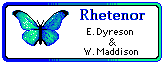

|  |
Rhetenor: a package of morphometrics modules for the Mesquite system |
contact: e_dyreson@umwestern.edu
August 2005
This package of modules and library classes demonstrates the use of the Mesquite system to do morphometrics calculations.
The Rhetenor package of morphometrics modules includes:
In conjuction with the standard modules in Mesquite, including Plot Tree, the charting modules, and character evolution simulations, these calculations can be used to do standard morphometric analyses, or morphometrics in a phylogenetic context.
By the way, "Evolutionary Principal Components Analysis" is a new method by W. Maddison & E. Dyreson that does PCA on reconstructed changes along branches of a tree. This results in a rotation whose first axis maximizes evolutionary change along the branches, and avoids problems of non-independence of species in a cross-species PCA. Because of the reliance on a reconstruction, it has some statistical problems as compared to related methods like Garland's ordinations on independent contrasts, but it has the advantage (for visualization purposes) that the original sample points can be plotted on the resulting axes.
To install Rhetenor, the "rhetenor" directory must be installed in the "mesquite" directory within "Mesquite_Folder".
There is a series of example data files in the directory "Multivariate_Continuous". The files are self explanatory; begin with the file whose name begins with "00".
Rhetenor currently makes use of JAMA (http://math.nist.gov/javanumerics/jama/) for some of its matrix manipulations.
About the name Rhetenor: Rhetenor was an incidental character in Ovid's Metamorphosis, but more importantly "rhetenor" is the specific epithet for a member of the butterfly genus Morpho (morphometrics...). Coincidentally, it is also the generic name of a little-known neotropical jumping spider.
© Eric Dyreson and Wayne Maddison, 2002-2005